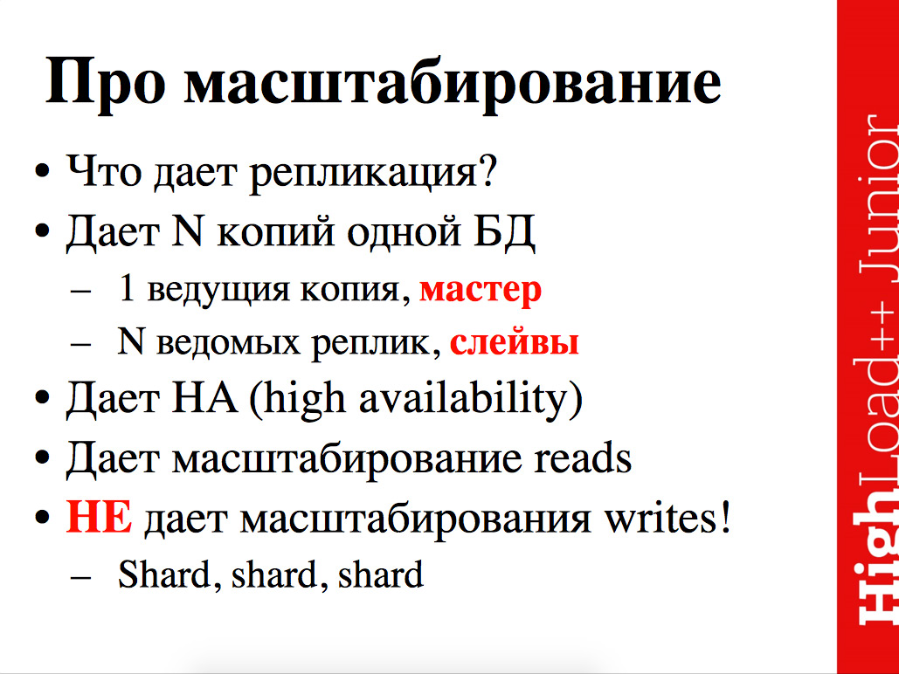
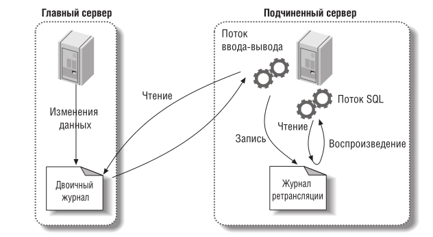
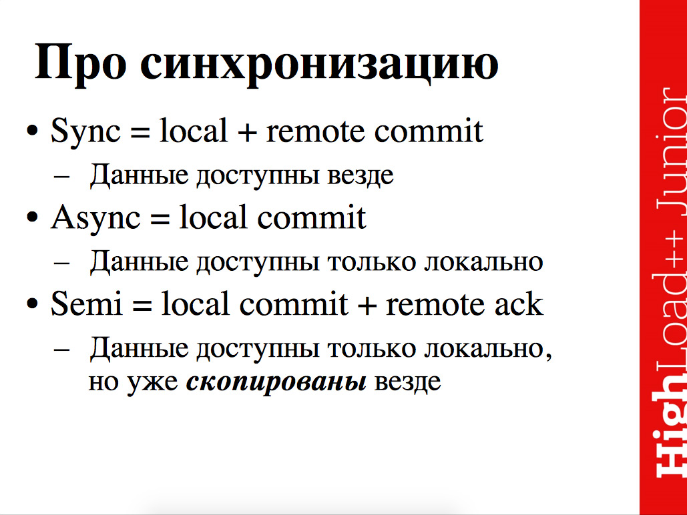

Репликация (replication)
Репликация — одна из техник масштабирования баз данных. Состоит эта техника в том, что данные с одного сервера базы данных постоянно копируются (реплицируются) на один или несколько других (называемые репликами). Для приложения появляется возможность использовать не один сервер для обработки всех запросов, а несколько. Таким образом появляется возможность распределить нагрузку с одного сервера на несколько.
Репликация — это синхронное или асинхронное копирование данных между несколькими серверами. Ведущие сервера называют master, а ведомые сервера slave. Мастера используются для изменения данных, а слэйвы для считывания. В классической схеме репликации обычно один мастер и несколько слэйвов, так как в большей части веб-проектов операций чтения на несколько порядков больше, чем операций записи. Однако в более сложной схеме репликации может быть и несколько мастеров.
Например, создание нескольких дополнительных slave-серверов позволяет снять с основного сервера нагрузку и повысить общую производительность системы, а также можно организовать слэйвы под конкретные ресурсоёмкие задачи и таким образом, например, упростить составление серьёзных аналитических отчётов — используемый для этих целей slave может быть нагружен на 100%, но на работу других пользователей приложения это не повлияет.
Проблемы, решаемые репликацией
-
Распространение данных. Обычно репликация в MySQL потребляет не очень большую часть пропускной способности сети, к тому же ее можно в любой момент остановить и затем возобновить. Это полезно, если хранение копии данных происходит в географически удаленном пункте, например в другом центре обработки данных. Удаленный подчиненный сервер может работать даже с непостоянным (намеренно или по другим причинам) соединением. Однако если вы хотите обеспечить минимальное отставание реплики, то следует использовать надежный канал с малым временем задержки.
-
Балансировка нагрузки. С помощью репликации можно распределить запросы на чтение между несколькими серверами MySQL; в приложениях с интенсивным чтением эта тактика работает очень хорошо. Реализовать несложное балансирование нагрузки можно, внеся совсем немного изменений в код. Для небольших приложений достаточно просто «зашить» в программу несколько доменных имен или воспользоваться циклическим (round-robin) разрешением DNS-имен (когда с одним доменным именем связано несколько IP-адресов). Возможны и более изощренные решения. Стандартные технологии балансирования нагрузки, в частности сетевые балансировщики, прекрасно послужат для распределения нагрузки между несколькими серверами MySQL.
-
Резервное копирование. Репликация – это ценное подспорье для резервного копирования. Однако подчиненный сервер все же не может использоваться в качестве резервной копии и не является заменой настоящему резервному копированию.
-
Высокая доступность и аварийное переключение на резервный сервер(failover). Репликация позволяет исправить ситуацию, при которой сервер MySQL является единственной точкой отказа приложения. Хорошая сис тема аварийного переключения при отказе, имеющая в составе реплицированные подчиненные серверы, способна существенно сократить время простоя.

Топологии репликации
Master-Slave репликация
В этом подходе выделяется один основной сервер базы данных, который называется Master. На нем происходят все изменения в данных (любые запросы MySQL INSERT/UPDATE/DELETE). Слейв сервер постоянно копирует все изменения с Master. С приложения на Слейв сервер отправляются запросы чтения данных (запросы SELECT). Таким образом Master сервер отвечает за изменения данных, а Slave за чтение.
Master-Master репикация
Существует также схема Master-Master в ней любой из серверов может использоваться как для чтения, так и для записи. Но вероятные поломки делают Master-Master репликацию непривлекательной. Выход из строя одного из серверов практически всегда приводит к потере каких-то данных. Последующее восстановление также сильно затрудняется необходимостью ручного анализа данных, которые успели либо не успели скопироваться.
Следует отметить, что репликация сама по себе не очень удобный механизм масштабирования. Причиной тому — рассинхронизация данных и задержки в копировании с мастера на слейв. Зато это отличное средство для обеспечения отказоустойчивости. Вы всегда можете переключиться на слейв, если мастер ломается и наоборот. Чаще всего репликация используется совместно с шардингом именно из соображений надежности.
Репликация без Master
Некоторые системы хранения данных используют подход, отказываясь от концепции ведущего узла и позволяя непосредственное поступление информации об операциях записи на все реплики. В ряде ранних реплицируемых информационных систем не было ведущего узла, но за время доминирования реляционных баз данных эта идея была практически забыта. Такая архитектура снова вошла в моду после того, как Amazon задействовал ее для своей предназначенной для внутреннего использования системы Dynamo. Riak, Cassandra и Voldemort представляют собой вдохновленные Dynamo склады данных с открытым исходным кодом, применяющие модели репликации без ведущего узла. Поэтому подобный тип БД называют Dynamo-подобной базой данных (Dynamo-style database).
В некоторых реализациях репликации без ведущего узла клиент непосредственно отправляет информацию о своих операциях записи на несколько реплик, в то время как для остальных данную манипуляцию от имени клиента совершает узел-координатор. Однако он, в отличие от БД с ведущим узлом, не навязывает определенный порядок операций записи. Как мы увидим в дальнейшем, это отличие в архитектуре приводит к очень серьезным последствиям в смысле стиля использования базы данных
Как работает репликация
Главный сервер записывает изменения данных в двоичный журнал. Эти записи называются событиями двоичного журнала. Конкретные реализации репликации могут быть нескольких видов.
Операторная(командная).
В простейшем случае ведущий узел записывает в журнал каждый выполняемый запрос на запись (оператор) и отправляет данный журнал выполнения операторов ведомым узлам. В случае реляционной БД это значит, что каждый оператор INSERT, UPDATE или DELETE пересылается ведомым узлам, и каждый ведомый узел производит синтаксический разбор и выполнение этого оператора SQL так, как если бы он был получен от клиента.
Но есть проблемы:
- Все операторы, вызывающие недетерминированные функции (например, функцию NOW() для получения текущего времени или RAND() — для случайного числа), вероятно, будут генерировать разные значения для каждой реплики.
- Если операторы используют столбец с автоматически увеличиваемым значением или зависят от существующих данных из базы (например, UPDATE … WHERE <какое-то условие>), то они должны выполняться на всех репликах в строго одинаковом порядке, иначе их результаты будут различными. Это может быть неудобно в случае множества параллельно выполняемых транзакций.
- Операторы с побочными действиями (например, триггеры, хранимые процедуры, пользовательские функции) могут приводить к различным побочным действиям на разных репликах, за исключением случая, когда все побочные действия полностью детерминированы.
Эти проблемы решаемы: например, ведущий узел может заменять все вызовы недетерминированных функций фиксированным возвращаемым значением при записи оператора в журнал, чтобы все ведомые узлы получали одно значение. Однако в связи с большим количеством граничных случаев обычно предпочитают другие методы репликации. Операторная репликация использовалась в MySQL вплоть до версии 5.1. Она иногда применяется и сейчас, в силу своей компактности, но по умолчанию MySQL переключается на построчную репликацию при малейших признаках недетерминизма в операторе. VoltDB задействует операторную репликацию и обеспечивает ее надежную работу путем требования детерминизма транзакций.
Перенос журнала упреждающей записи WAL(физическая репликация)
В двоичный журнал записывает фактические изменения данных Самое существенное достоинство заключается в том, что теперь MySQL может корректно реплицировать любую команду, причем в некоторых случаях это происходит гораздо более эффективно. Основной недостаток – это то, что двоичный журнал стал намного больше и из него непонятно, какие команды привели к обновлению данных, так что использовать его для аудита с помощью программы mysqlbinlog уже невозможно. Команды не включаются в журнал событий, поэтому будет сложно определить, какая команда выполнялась. Во многих случаях знать это так же важно, как и знать об изменении строк. Фактически процесс применения изменений при построчной репликации в значительной степени является черным ящиком — не видно, что делает сервер. Кроме того, он плохо документирован и объяснен, поэтому когда что-то работает неправильно, устранить неполадки довольно сложно. Например, если подчиненный сервер выберет неэффективный способ поиска строк для изменения, вы этого не заметите.
-
Подчиненный сервер копирует события двоичного журнала в свой журнал ретрансляции (relay log).
-
Подчиненный сервер воспроизводит события из журнала ретрансляции, применяя изменения к собственным данным.

Основной его недостаток метода состоит в том, что журнал описывает данные на очень низком уровне: WAL содержит все подробности того, какие байты менялись в тех или иных дисковых блоках. Это тесно связывает репликацию с подсистемой хранения. Если база данных меняет формат хранения с одной версии на другую, то обычно становится невозможной работа различных версий СУБД на ведущем и ведомых узлах.
На первый взгляд, это лишь незначительный нюанс реализации, но влияние его на эксплуатацию огромно. Если протокол репликации допускает использование ведомыми узлами более нового программного обеспечения, чем ведущим, то появляется возможность выполнять обновление ПО базы данных без всякого простоя: сначала обновляются ведомые узлы, а затем производится восстановление после отказа, чтобы сделать один из этих обновленных узлов новым ведущим. Если же протокол репликации не допускает подобного расхождения версий, как часто бывает при переносе журнала упреждающей записи, то подобные обновления требуют простоя системы
Логическая (построчная) журнальная репликация
Альтернатива — использовать разные форматы журнала для репликации и подсистемы хранения; это даст возможность расцепить журнал репликации с внутренним устройством подсистемы хранения. Такой вид журнала называется логическим журналом (logical log), чтобы различать его с физическим представлением данных подсистемы хранения.
Логический журнал для реляционных баз данных обычно представляет собой последовательность строк, описывающих операции записи в таблицы базы на уровне строк:
- при вставке строки журнал включает новые значения всех столбцов;
- при удалении строки журнал содержит информацию, достаточную для однозначной идентификации удаляемой строки. Обычно это первичный ключ, но если в таблице он отсутствует, то сохраняются старые значения всех столбцов;
- при обновлении строки журнал содержит информацию, достаточную для однозначной идентификации обновляемой строки, и новые значения всех столбцов (или по крайней мере новые значения всех изменившихся столбцов).
Транзакция, меняющая несколько строк, приводит к генерации нескольких подобных записей в журнале, за которыми следует запись, указывающая, что транзакция была зафиксирована. Этот подход использует бинарный журнал СУБД MySQL (в случае, когда он настроен на применение построчной репликации). Поскольку логический журнал расцеплен с внутренним устройством подсистемы хранения, оказывается проще поддерживать его обратную совместимость, благодаря чему на ведущем и ведомых узлах могут выполняться различные версии СУБД или даже различные подсистемы хранения. Формат логического журнала также удобнее для синтаксического разбора внешними приложениями. Этот аспект играет важную роль при необходимости отправить содержимое БД во внешнюю систему, например в склад данных для офлайн-анализа или построения пользовательских индексов и кэшей. Такая методика называется захватом изменений данных (change data capture).
Триггерная репликация
Описанные до сих пор подходы к репликации реализовались СУБД без участия кода приложения. Во многих случаях именно это и нужно, но встречаются обстоятельства, когда требуется большая гибкость. Например, если необходимо реплицировать только подмножество данных, или выполнить репликацию из БД одного типа в БД другого, или задействовать логику разрешения конфликтов, то может понадобиться перенести репликацию на уровень приложения. Некоторые утилиты, например Oracle GoldenGate, позволяют приложению получить доступ к данным с помощью чтения журнала БД. Или же можно воспользоваться возможностями, имеющимися во многих реляционных БД: триггерами (trigger) и хранимыми процедурами (stored procedure). Триггеры позволяют регистрировать пользовательский код, автоматически запускаемый при возникновении в БД события изменения данных (транзакции записи). Триггер получает возможность занести изменения в отдельную таблицу, из которой их сможет прочитать внешний процесс. Затем этот внешний процесс сможет применить любую логику приложения, которая только понадобится, и реплицировать изменения данных в другую систему. Накладные расходы при триггерной репликации обычно выше, чем при других типах репликации, и она сильнее подвержена ошибкам и более ограниченна, чем встроенная репликация базы данных. Однако благодаря своей гибкости может оказаться полезной
Синхронная и асинхронная

Синхронная
В случае синхронной репликации, если данная реплика обновляется, все другие реплики того же фрагмента данных также должны быть обновлены в одной и той же транзакции. Логически это означает, что существует лишь одна версия данных.
В большинстве продуктов синхронная репликация реализуется с помощью триггерных процедур (возможно, скрытых и управляемых системой). Но синхронная репликация имеет тот недостаток, что она создаёт дополнительную нагрузку при выполнении всех транзакций, в которых обновляются какие-либо реплики (кроме того, могут возникать проблемы, связанные с доступностью данных).
Синхронная означает, если у вас commit прошел, то база вам обещает, что не просто commit прошел, а он еще и прошел на удаленных нодах. Т.е. мы commit сделали, подключились к одной конкретной ноде, к одному конкретному серверу, эти данные в идеале, чтобы обеспечить и масштабируемость по чтениям и доступность данных, должны улететь на соседние машины, и транзакции там должны зафиксироваться. Это синхронная репликация.
Асинхронная
В случае асинхронной репликации обновление одной реплики распространяется на другие спустя некоторое время, а не в той же транзакции. Таким образом, при асинхронной репликации вводится задержка, или время ожидания, в течение которого отдельные реплики могут быть фактически неидентичными (то есть определение реплика оказывается не совсем подходящим, поскольку мы не имеем дело с точными и своевременно созданными копиями).
В большинстве продуктов асинхронная репликация реализуется посредством чтения журнала транзакций или постоянной очереди тех обновлений, которые подлежат распространению. Преимущество асинхронной репликации состоит в том, что дополнительные издержки репликации не связаны с транзакциями обновлений, которые могут иметь важное значение для функционирования всего предприятия и предъявлять высокие требования к производительности.
К недостаткам этой схемы относится то, что данные могут оказаться несовместимыми (то есть несовместимыми с точки зрения пользователя). Иными словами, избыточность может проявляться на логическом уровне, а это, строго говоря, означает, что термин контролируемая избыточность в таком случае не применим.
Асинхронность репликации означает, что данные на Слейве могут появиться с небольшой задержкой. Поэтому, в последовательных операциях необходимо использовать чтение с Мастера, чтобы получить актуальные данные.
Рассмотрим кратко проблему согласованности (или, скорее, несогласованности). Дело в том, что реплики могут становиться несовместимыми в результате ситуаций, которые трудно (или даже невозможно) избежать и последствия которых трудно исправить.
В частности, конфликты могут возникать по поводу того, в каком порядке должны применяться обновления. Например, предположим, что в результате выполнения транзакции А происходит вставка строки в реплику X, после чего транзакция B удаляет эту строку, а также допустим, что Y — реплика X. Если обновления распространяются на Y, но вводятся в реплику Y в обратном порядке (например, из-за разных задержек при передаче), то транзакция B не находит в Y строку, подлежащую удалению, и не выполняет своё действие, после чего транзакция А вставляет эту строку. Суммарный эффект состоит в том, что реплика Y содержит указанную строку, а реплика X — нет.
Но ок, транзакция зафиксировалась локально, это тебе что-нибудь гарантирует? Правильный ответ – нет. Потому что возможно, что все остальные реплики лежат дохлые, и те данные, которые вы вкатили на master, они у вас никуда не резервируются. Если у вас master просто упадет, в смысле SQL-сервер упадет, то все хорошо условно, он эти изменения с Write-Ahead Log'a проиграет, но если у вас внезапно демоническая сила подожжет сервер, и он сгорит, прям весь, то данные, которые вы якобы зафиксировали, они на самом деле зафиксировались на одной машине.
Полусинхронная
Синхронность – хорошо с точки зрения надежности, но медленно. Асинхронность полная – зафиксировали локально транзакцию и не ждем вообще удаленные реплики – очевидно быстро (ничем же не отличается от локального commit'a), но никаких гарантий по надежности.
Возникает промежуточный вариант – полусинхронная репликация – это когда commit возвращает успех, в тот момент, когда локально транзакция уже зафиксирована, селекты к master'у уже начнут возвращать новое состояние, новый баланс, и удаленные сервера уже скачали эти данные, уже скачали эту транзакцию, но возможно еще не успели накатить, то ли накатят через 2 секунды, то ли через 2 недели – как повезет. Это самый важный момент, с которым на практике придется сталкиваться, и делать выбор, настраивать и т.д.
Также есть другое определение полусинхронности: делать все ведомые узлы синхронными неразумно: перебой в обслуживании одного любого узла приведет к замедлению работы системы вплоть до полной остановки. На практике активизация в СУБД синхронной репликации обычно означает, что один из ведомых узлов — синхронный, а остальные — асинхронны. В случае замедления или недоступности синхронного ведомого узла в него превращается один из асинхронных ведомых узлов. Это гарантирует наличие актуальной копии данных по крайней мере на двух узлах: ведущем и одном синхронном ведомом. Такая конфигурация иногда называется полусинхронной (semi-synchronous).
Инвалидация кеша при репликации
https://emacsway.github.io/ru/cache-dependencies/